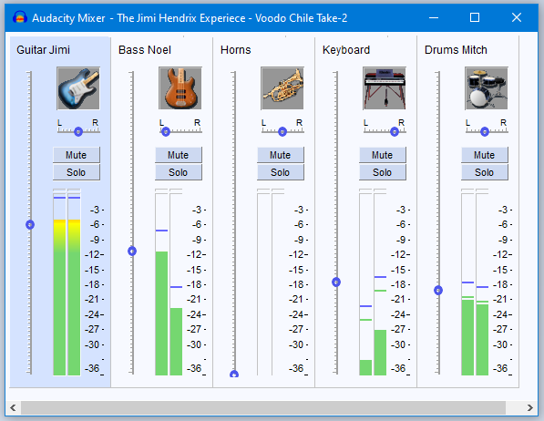

Mixer
The Mixer command is enabled whenever there's an audio track - it can even be brought up during playback.
- Accessed by:
The Mixer command is enabled whenever there is an audio track - it can even be brought up during playback. When there are no audio tracks it is grayed-out and unavailable.
The Mixer window will always remain on top of the Audacity Window if they are superimposed.
- 
Mixer controls
All Mixer controls update the controls in their respective Track Control Panels and vice versa. For example, muting a track in the Mixer also mutes that track in the main tracks window.
As in the Track Control Panels, double-click in either Mixer slider to enter an exact gain or pan value in a text box.
The meters are post-fade, like the Meter Toolbars, such that they show the levels as modified by the track's gain/pan sliders and mute/solo buttons. Mono tracks show in both track meters, as in the Meter Toolbar.
You can select a Mixer track by clicking its instrument image (or the Audacity logo if no instrument image is available). Selection of a track in Mixer is indicated by the blue background. In the example above it is the "Guitar Jimi" track that is selected.
Deselect all tracks by clicking in the white strip at the bottom of the the Mixer, note that the shortcut Ctrl + Shift +A to deselect all tracks does not work in Mixer.
- Holding Ctrl and clicking in a track's Track Strip toggles the selectedness of that track only. So if a track is not selected, Ctrl-clicking its Track Strip selects it, or deselects it if it is already selected.
- If you select a track by clicking on its Track Strip and then use Shift and click in another track's Track Strip, all tracks between and including those two tracks will be selected.
The example in the image
Note the following points in the image above:
- Jimi's guitar track is both selected and center-panned
- Noel's bass track is panned left in the mix
- the horns are taken out of the mix with the gain slider minimum position
- the keyboards are panned right and have their volume reduced
- Mitch's drums are center-panned and lowered in volume
Track identification
By default, the image at the top of each Track Strip is the Audacity logo, but if you name the track in the Track Control Panel with an instrument name or abbreviation thereof, Mixer automatically shows an appropriate image as listed below. A track name that contains any of the keywords (in bold) will display the image that is associated with those keywords. If the track name contains keywords for more than one instrument, the Mixer will display the best match.
|
|
|
Examples:
- "electric b" displays an standard electric guitar ("b" is not a keyword), but "electric bs" displays an electric bass guitar ("bs" is a keyword).
- "electric gtr" will display an electric guitar. Although these keywords are also in the bass guitar list, in the absence of the keywords bass or bs, the Mixer sees the (standard) electric guitar as a better match.
- "drums" will display a drum kit as it is a keyword. "drum" will also display a drum kit as it contains dr which is a keyword.